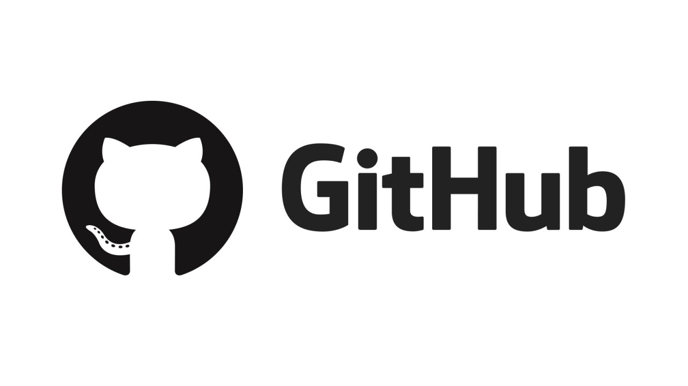

Testing
Pruebas manuales, smoke, regresión y exploratorias.
Soy Justin Samuel Rojas Jarquin, estudiante de Ingeniería en Sistemas con interés en aseguramiento de calidad, pruebas funcionales.
Pruebas manuales, smoke, regresión y exploratorias.
Interés en Selenium, Cypress y Playwright.
Java, SQL, HTML, CSS y JavaScript.
QA Engineer en formación
Sobre mí
Mi perfil combina fundamentos de desarrollo de software con una orientación clara hacia el aseguramiento de calidad.
Me interesa crecer como QA Engineer aportando calidad desde la validación de requerimientos, pruebas funcionales y mejora continua del software.
Mi experiencia en programación me ayuda a comprender el sistema desde dentro, detectar errores con más criterio y comunicar incidencias de forma clara.
Estoy enfocado en fortalecer habilidades en testing manual, documentación de defectos, diseño de casos de prueba y automatización moderna.
Capacidades
Un perfil QA moderno necesita análisis, criterio técnico y buena comunicación con el equipo.
Diseño de casos de prueba, pruebas funcionales, smoke, regresión, exploratorias y validación de flujos.
Interés en herramientas como Selenium, Cypress y Playwright para escalar cobertura de pruebas.
Documentación de defectos, priorización de incidencias y seguimiento con herramientas como Jira.
Base en Java, SQL, HTML, CSS y JavaScript para entender mejor el comportamiento del producto.
Comprensión de Scrum, colaboración en equipo y adaptación a ciclos iterativos de desarrollo.
Comunicación, organización, pensamiento analítico, trabajo en equipo y enfoque en calidad.
Portafolio
Estos proyectos reflejan mi formación técnica y mi enfoque en calidad de software.

Desarrollo de una aplicación web con validación de estructura, interfaz y control de funcionalidades clave.
HTML · CSS · JavaScript
Trabajo con lógica del sistema, persistencia de datos y revisión de entradas con enfoque técnico.
Java · Oracle · QA Thinking
Uso de buenas prácticas de validación, análisis de errores y organización del trabajo con herramientas de equipo.
Jira · Git · TestingContacto
Puedes usar esta sección para mostrar tus datos profesionales y dejar una forma de contacto directa.
Nombre: Justin Samuel Rojas Jarquin
Correo: justinrojas1000@gmail.com.com
GitHub: https://github.com/JustinRojasJarquin